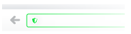

Par défaut, le module Qwant vous protège du pistage. Désactiver cette option permettra aux sites web d'installer des informations de pistages dans votre navigateur.
Filtrage par sites
Vous pouvez également activer ou désactiver le pistage sur les sites de votre choix en cliquant sur l'icône de sécurité situé dans la barre d'adresse.
By default, the Qwant addon protect you agains tracking. Deactivating this option allow web site to install tracking data in your browser.
Filtering tracking protection
You can also activate or deactivate tracking protection on web sites of your choice, by clicking on the security icon that is in the address bar.
